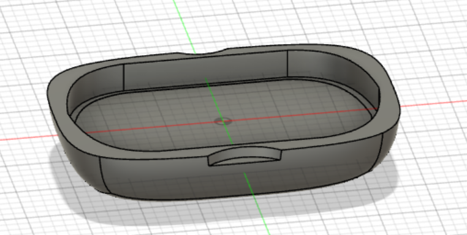

TOP
Design SeminarⅠ・Ⅱ
Digital Fabrication
Design SeminarⅢ・Ⅳ
Design SeminarⅤ
doyolab
pura sushi2
ぷら寿司作成の工程～part1 シャリ編～
こんにちはreiです!
今回はぷら寿司を作る工程を書いていこうと思います！
【工程１】 シャリのスケッチを作る
今回3Dプリンタを使用し、シャリを作成するためにfusion360
（サイトのリンクはここ）
というアプリを使用して、まずはスケッチをしていきます！

※半分にしているのは内緒で。一つのシャリとしてデザインしても可！
【工程２】 スケッチしたシャリをcuraに通す
次にfusion360で作成したデータをcuraというアプリ（
サイトリンクはここ
）に入れ、3Dプリントする最終チェックをします。
【工程3】 3Dプリンタでプリント
curaで確認したデータを3Dプリンタに取り込み、プリントして行きます!
完成したのがこちら！
【追記】 仕様を変えるとこんなに本物っぽくシャリのボツボツ感を出せることができます！
以上がぷら寿司 part1 シャリ編 でした！
次は part2 ネタ編 でお会いしましょう！
part2 ネタ編のリンク
戻
purasushi TOP
doyolab TOP
homepage TOP